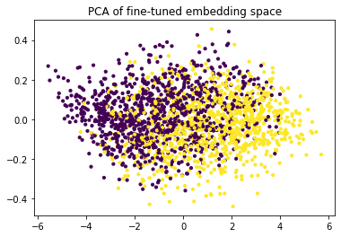
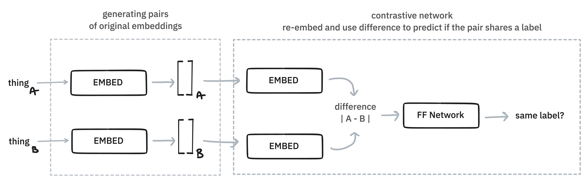
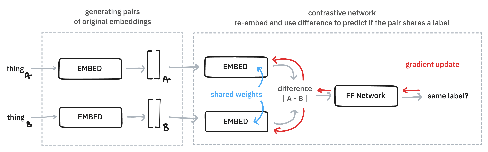
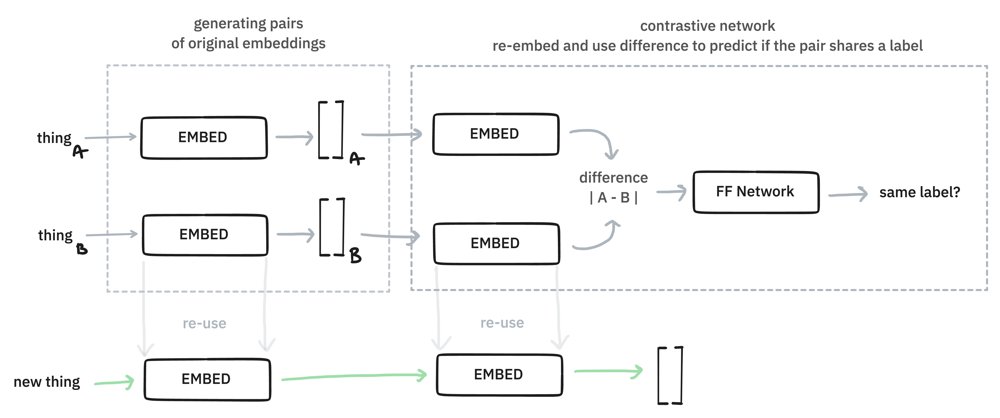

Finetuners
Embetter also supports tools to finetune the embedded space. This can be useful when you're trying to steer the embedding towards a task that you're interested in, which can make bulk labelling much easier. This guide will give an example of this.
How it works¶
In general, this library is able to generate embeddings.

But the embeddings could eventually be the input of a neural network. So let's draw that.

In this diagram, the network has an input layer of size n, which is provide by one of our embedding models. Next it has a hidden layer of size k and an output node. To make the drawing easier we've only draw a single node as output, but the argument will also work for any number of classes.
Let's now suppose that we train this model on a small set of labelled data. Then we'll have a gradient update that can update all the weights in this network.
Here's the main trick: after we're done training, we don't output the predictions from the neural network! Instead, we might the hidden layer as the new embedding.

The thinking here is that this embedding will blend the information from the embedding, which hopefully is general, with the label that we're interested in, which is specific to our problem. Having such a blended embedding can be very useful for bulk labelling purposes, but if we pick our hyperparams right, we might even have an embedding that's a better fit for modelling.
There are many methods that we might use for finetuning and we've just explained the method used in the FeedForwardFinetuner component.
Demo¶
Let's demonstrate this effect with a demo. We will use the imdb dataset, hosted on Huggingface, for our example here. This dataset contains movie reviews and the task is to predict if these are negative or positive reviews.
from datasets import load_dataset
imdb = load_dataset("imdb")
Next we'll prepare our data. We'll assume that we have 200 annotated examples. Let's call this our "train" set. We will encode this data with a sentence encoder.
from embetter.text import SentenceEncoder
# Load up a sentence encoder.
enc = SentenceEncoder()
# Assume we have 200 labels
n_train = 200
# Grab 200 examples and encode them
df_train = imdb['train'].to_pandas().sample(frac=1, random_state=32)
X_train = enc.transform(df_train['text'].to_list()[:n_train])
y_train = df_train['label'][:n_train].values
Next we will also prepare a seperate set which we'll use to evaluate. This set is much larger, but we'll still pluck a subset to make the compute time shorter.
# Let's grab 2000 examples for our "test" set
n_test = 2000
# Grab 2000 examples and encode them
df_test = imdb['test'].to_pandas().sample(frac=1, random_state=42)
X_test = enc.transform(df_test['text'].to_list()[:n_test])
y_test = df_test['label'][:n_test].values
Next we'll load our finetuner.
from embetter.finetune import ForwardFinetuner
# Create a network with some settings. You can totally change these.
tuner = ForwardFinetuner(n_epochs=500, learning_rate=0.01, hidden_dim=200)
# Learn from our small training data
tuner.fit(X_train, y_train)
Given that we have a tuner trained, we can now apply it to our larger test set.
# Note that it's all skearn compatible
X_test_tfm = tuner.transform(X_test)
Evaluation¶
We just created X_test_tfm, which is a finetuned variant of X_test. To help
explain how the embedded space changed we'll make a PCA chart for both.
from sklearn.decomposition import PCA
from matplotlib import pylab as plt
X_orig = PCA().fit_transform(X_test)
X_finetuned = PCA().fit_transform(X_test_tfm)
Let's now show the difference.
# First chart
plt.scatter(X_orig[:, 0] , X_orig[:, 1], c=y_test, s=10)
plt.title("PCA of original embedding space")

Notice how the two classes (positive/negative) are all mixed up when we look at the PCA plot of the embeddings. Let's now see what happens when we apply finetuning.
# Second chart
plt.scatter(X_finetuned[:, 0] , X_finetuned[:, 1], c=y_test, s=10)
plt.title("PCA of fine-tuned embedding space")

The classes seem to separate much better! That's good news if you'd like to make selections for bulk labelling. It should be much easier to select the class that you're interested in, or to select from a region where there is plenty of doubt.
Hyperparams¶
It deserves mentioning that the effect on the PCA-space does depend a lot on the chosen hyperparameters of the ForwardFinertuner.
tuner = ForwardFinetuner(n_epochs=500, learning_rate=0.01, hidden_dim=10)
If we decrease the hidden dimensions for example then we end up with a space that looks like this:

You might want to play around with the settings, but it deserves to be said that you can also overfit on the few examples that you have in X_train.
Extra Details¶
In scikit-learn terms, a fine-tuner is a "transformer"-component. That means that it can be used in a pipeline too!
from sklearn.pipeline import make_pipeline
# Grab a few examples
X = df_test['text'].to_list()[:50]
y = df_test['label'].to_list()[:50]
# Let's build a pipeline!
pipe = make_pipeline(
SentenceEncoder(),
ForwardFinetuner(n_epochs=500, learning_rate=0.01, hidden_dim=10),
PCA()
)
# The fine-tuning component can use `y_train`.
pipe.fit(X, y)
# Apply all the trained steps!
pipe.transform(X)
Feel free to mix and match as you see fit. Also note that the finetuning components in this library also support the partial_fit API incase you want to train on a stream of small batches.
Contrastive Finetuners¶
There is more than one way to finetune though. Instead of using a feed forward architecture, you can also opt for a contrastive approach.

This approach works by generating pairs of original embeddings. Some pairs will be positive, meaning they are embeddings of examples that belong to the same class. Others will be negatively sampled, meaning they don't share the same class. The embeddings get re-embedding with a linear layer such that they're able to adapt depending on the label.

The embedding layers in the contrastive network share the same weights and they both get updated during the gradient update. Then, at interference, we end up with new embeddings because we can re-use the learned contrastive embedding layer.

You can experiment with this approach by importing the
from embetter.finetune import ContrastiveFinetuner
n_train = 200
texts = df_train['text'].to_list()[:n_train]
label = df_train['label'][:n_train].values
# These are original embeddings
X = SentenceEncoder().fit_transform(texts, label)
# These are fine-tuned embeddings
X_tfm = ContrastiveFinetuner().fit_transform(X, label)
We're still experimenting with both approaches to finetuning to try and understand when each approach is better.